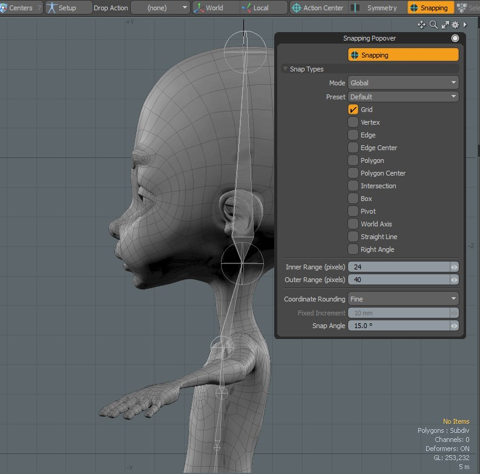

- Yonseo Rigging Kit for Modo
Projectfiles: project/lesson3/YON_lesson3.lxo
#3 Making the Skeleton Spine
Hotkeys:
ctrl + / view wireframe
\/ hide wireframe
Tip:
What are naming conventions?
Naming conventions allows us to organize our items or objects. For example, in this lesson
we will be using the naming convention "bone" followed by the letter "L" or "R". Each word is spaced with underscores '_'.
Here are some examples of naming conventions:
bone_L
This tell us that this object is a bone in our model. "L" is for left and "R" for right. In this case our object is a bone and our model
is our character. By binding the bone to our model we can animate or move our character.
We will add more naming convetions as we create more bones. You can make and use your own naming conventions.
1) Making the Spine Bones
Jump over to the setup tab. Press F11 to open the snapping popover. Press 'x' to enable snapping or click on the snapping button. Make sure Grid is selected.

Select Skeleton and create four bones for the torso starting at the pelvis and ending at the clavicle.
Create 2 more bones, one for the neck and last one for the head. Now you should have 6 bones
The bones will snap into place based
on the grid squares because we have enabled snapping. Its a quick and easy process.
the center view or pressing '7' will allow you to move each bone center without affecting the rest of
the bones.
2) Renaming Joints
Notice that we have 7 joints in our right view but on
our model we have 6 bones. The joints displayed are the connecting pieces of the bones, so we have 7 joints in total and
6 bones in our 3D view. The last joint in the hierachy will always be named 'end_' followed by the name of the joint.
This is because the end joint of any skeleton has no effect on the model and will most likely not be used to animate.
If you think of the ends of your fingers in the real world, they don't rotate or move on their own, it is the joint that comes before the end that
will move or rotate that end.
skeleton_root
will be the start of our skeleton. Every bone will go below this in the hierachy.
Starting from the root rename each joint as shown below. Anything named "end_" is the end part of our skeleton.
3) Making the Leg bones.
Make sure your joints rotation is pointing towards the left. When creating a bone there is a small blue square that appears, you can select that and position the joint.
Another way to do this,
first select your bone in "item" mode. Then click "center" mode. Select your joint. It will
turn yellow at the center when it has been selected. Now you can rotate or translate the joint without
affecting the other joints.
We can also align and position our joints with a drop action.
Now making sure our selection is set to 'items'. Go to drop action, and select 'match position'.
This option will match the center position of our leg bones to the torso positon when we perform a drop action.
Simply click and drag the top of the Leg chain
in the 'items' window and drop it over the lower torso bone. Now our leg bone has a matching position of our pelvis bone.
From here I can move the leg bone to the right and now it is aligned with the spine bone.
Rename the leg bones using the name convention '_L_' for the left leg.
In the next lesson we will cover mirroring x.